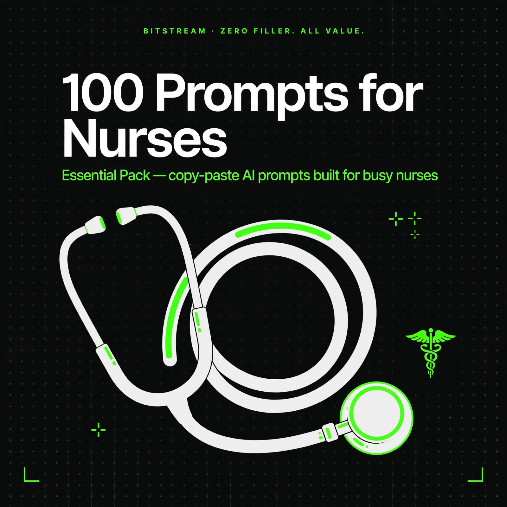

BITSTREAM · ZERO FILLER. ALL VALUE.
100 Prompts
for Nurses
100 copy-paste prompts for the toughest shifts on earth.
Open a free AI tool, paste, fill in the blanks, done.
ESSENTIAL PACK · $7.99
How to use this pack (60 seconds)
- Open a free AI tool — ChatGPT (chatgpt.com), Claude (claude.ai), or Gemini (gemini.google.com). No account tricks, no paid plan needed.
- Copy any prompt and replace the [BRACKETED] parts with your details.
- Be specific. Your unit, your shift, your patient population — specifics in, quality out. "Make a handoff sheet" gets a generic form. "Make a bedside report sheet for a 4-patient med-surg assignment on night shift with two post-ops" gets something you can actually use tonight.
- Treat the first answer as a draft. Reply with "make it shorter," "add a falls-risk section," or "plain language for a 6th-grade reading level" until it's right.
- You're the clinician. AI is a fast organizer and explainer — never a substitute for clinical judgment. Verify anything that touches patient care with the care team before acting on it.
Rule 1 — Never paste identifiable patient data into a public AI tool. Use initials, room numbers, or made-up stand-ins like [PATIENT INITIALS]. Follow your facility's privacy policy and HIPAA rules.
Rule 2 — AI organizes and explains; you decide. It can draft a care plan, quiz you for the NCLEX, or simplify discharge instructions — but clinical decisions, dosing, and triage stay with you and the care team. Always verify.
Rule 3 — One shift-saver at a time. Don't overhaul your whole workflow today. Pick one prompt: the handoff sheet, the patient-education handout, the thing that ate your lunch break last week.
1 · Shift Prep & Handoff Notes
Brain sheets, bedside reports, and shift prep that keep a 4-patient assignment from owning you.
PROMPT 01
Brain sheet for your assignment
Build me a printable nursing brain sheet for a [4-patient] assignment on a [med-surg] unit. Include columns for: room, patient initials, age/sex, diagnosis, code status, allergies, diet, activity, vitals frequency, IV access, drains/tubes, meds due times, labs due, and "to-do / watch for." Leave the cells blank for me to fill in.
PROMPT 02
Pre-shift assignment preview
I start a [night] shift on [med-surg] in an hour. Here's my assignment summary (de-identified): [paste it]. List: the 3 things to check first, likely overnight issues for each diagnosis, and what to ask the off-going nurse before she leaves. Clinical organizing help only — I'll verify with the care team.
PROMPT 03
SBAR for a provider call
Turn these rough notes into an SBAR I can read off when I call the provider. Situation/Background first, Assessment of what changed, Recommendation of what I'm asking for. Keep it under 60 seconds spoken: [paste your notes, no patient identifiers].
PROMPT 04
Bedside report script
Write a bedside report script I can use at change of shift for [med-surg] with the patient present. Cover: who I am, what happened today, the plan, and what the oncoming nurse will be watching. Patient-friendly language, about 2 minutes, with a line that invites the patient to add anything.
PROMPT 05
Off-going nurse questions
I'm taking over a [post-op day 2 cholecystectomy] patient mid-shift from another nurse. Give me a 10-question handoff checklist: the must-asks about drains, pain control, ambulation, diet, and what's pending — so I don't miss what the last nurse forgot to mention.
PROMPT 06
Night-shift rounding plan
I'm on nights with [6 patients] on [tele]. Build an hourly rounding plan that clusters care: which tasks happen at [midnight, 2am, 4am], what can wait until morning, and where to build in charting so I don't get buried. Let sleeping patients sleep.
PROMPT 07
Patient prioritization sort
Help me prioritize my [5-patient] assignment. Here's my de-identified rundown: [paste it]. Order them for my first rounds by who I see first, second, and why — ABCs first, and flag anyone trending toward unstable. This is organizing help only; I make the final clinical call.
PROMPT 08
Admit cheat sheet
Make me an admit cheat sheet for [an ED admit to med-surg with new-onset atrial fibrillation]: what to assess on arrival, the labs and meds I'm likely to see, what education to start tonight, and what to hand to the next shift. Organizing checklist only.
PROMPT 09
Discharge handoff one-pager
Create a one-page discharge handoff template for [CHF patients going home]: what the next nurse needs to confirm — meds reconciled, diet teaching done, follow-up appointment scheduled, weight scale at home, red flags reviewed. De-identified, checklist format.
PROMPT 10
Floating to a new unit
I'm floating from [med-surg] to [telemetry] tomorrow. Give me: the 8 things that are different on tele vs med-surg, common alarms and what they usually mean, and 5 questions to ask the charge nurse on arrival. Practical, shift-focused.
PROMPT 11
Rapid-response readiness
Quiz me on rapid-response basics for [a patient whose BP is dropping and urine output has stopped]. Ask me what I'd assess, what data I'd gather before calling, and what the team will want to know — walk me through it step by step, then tell me what I missed. Study/review format, not live clinical advice.
PROMPT 12
End-of-shift "did I miss anything" sweep
Here's my de-identified end-of-shift rundown: [paste it]. Scan it like a picky charge nurse: what's undocumented, what's pending, what labs haven't resulted, and what could bite the next shift. Give me a punch list to close out before I clock out.
PROMPT 13
Overtime exit plan
I'm [90 minutes] past shift end with [charting, one discharge, and a new admit] still open. Build a triage plan: what must be done by me, what can be handed off cleanly, and exactly what to say to the charge nurse so I can leave without guilt or loose ends.
2 · Patient Education in Plain Language
Discharge teaching, disease explanations, and handouts patients actually understand — 6th-grade reading level, no jargon.
PROMPT 14
Discharge instructions, plain English
Rewrite these discharge instructions in plain language at a [6th-grade] reading level: [paste them]. Short sentences, no medical jargon, keep every med name and dose exactly as written. I'll review the final before it reaches the patient.
PROMPT 15
Teach-back quiz builder
Write 5 teach-back questions I can ask a [new diabetic] after I explain [insulin basics]. Questions should reveal whether they really understood — not yes/no questions. Include what a good answer sounds like so I can coach on the spot.
PROMPT 16
Explain the diagnosis simply
Explain [congestive heart failure] to an adult patient in plain language: what it is, what it means day-to-day, and why [daily weights and low-sodium eating] matter. Warm, not scary, about 150 words. Educational text only — I'll adapt it to my patient.
PROMPT 17
Post-op wound care handout
Draft a one-page wound care handout for [an abdominal surgery patient going home with staples]: how to keep it clean, what normal healing looks like, and 5 signs to call about. Checklist format, large type feel, plain language. I'll verify against our discharge orders.
PROMPT 18
Med teaching cheat card
Make a patient-friendly teaching card for [warfarin]: what it's for, how to take it, what to eat consistently, and the warning signs to call about. No dosing advice — I'll confirm dosing with pharmacy. Plain language, fits on an index card.
PROMPT 19
Pediatric parent instructions
Write take-home instructions for a parent of a [4-year-old] with [an ear infection, starting amoxicillin]: how to give the medicine, what to expect, when to call back. Gentle tone for a worried parent, and note what NOT to do. I'll verify against the discharge orders.
PROMPT 20
Diet teaching, real food
Give me practical low-sodium teaching for a [newly diagnosed CHF patient]: 10 real meals and snacks under [500mg sodium] each using normal grocery-store food — not a generic "eat healthy" lecture. Plain language with one visual analogy for hidden sodium.
PROMPT 21
Fall prevention at home
Write a fall-prevention handout for an [elderly patient going home on blood pressure meds]: room-by-room hazards, what to change this week, and when to use the call light vs. getting up alone. Kind tone, bullet points, big-print friendly.
PROMPT 22
Explain the procedure
Explain [a cardiac catheterization] to an anxious patient in plain language: what will happen step by step, how long it takes, what they'll feel, and what to expect after. Calm, honest, no false reassurance. Educational text for me to adapt.
PROMPT 23
Chronic disease self-monitoring guide
Build a simple daily self-monitoring routine for a [COPD patient]: what to track each morning, green/yellow/red zone thresholds in plain words, and what to do in each zone. I'll verify thresholds with the care team before teaching it.
PROMPT 24
Smoking cessation coaching script
Write a 3-minute motivational conversation for a [patient who wants to quit smoking but has failed twice]. Non-judgmental, ask-first style, with one concrete next step at the end. Something I can use at the bedside today.
PROMPT 25
Language-barrier teaching
I need to teach [wound dressing changes] to a patient who speaks [Spanish] and the interpreter is delayed. Give me: the teaching points as numbered picture-friendly steps, key phrases in [Spanish] with phonetic pronunciation, and what to confirm with the interpreter later.
PROMPT 26
Dementia-friendly instructions
Rewrite these care instructions for a [caregiver of a patient with moderate dementia]: one idea per sentence, large-concept headings, visual cues they can point to, and a "call us when" box. [paste the instructions].
PROMPT 27
Postpartum discharge teaching
Create a discharge teaching checklist for a [first-time mom, vaginal delivery, going home day 2]: newborn basics, her own recovery, breastfeeding starter tips, and red flags for both. Warm tone, organized by "today / this week / call us if."
3 · Study & NCLEX Prep
Practice questions, memory tricks, and study plans that turn a coffee break into a review session.
PROMPT 28
NCLEX practice set, custom topic
Give me 10 NCLEX-style multiple-choice questions on [fluids and electrolytes], medium-hard difficulty. One question at a time: I answer, you tell me if I'm right, explain the rationale, and explain why each wrong answer is wrong before the next question.
PROMPT 29
Medication flashcards
Make me study flashcards for these [10 cardiac meds]: [list them]. Each card: drug class, what it does in plain words, the top 2 nursing considerations, and the red flag I'd report. Format as Q/A pairs I can quiz myself on.
PROMPT 30
Lab values drill
Quiz me on [CBC and BMP values]. Give me a value and ask: normal or abnormal, what it means, and the nursing action. Go one at a time, track my score out of 15, and at the end drill me again on the ones I missed.
PROMPT 31
Mnemonics for pharm
Create memory tricks for [the side effects of ACE inhibitors vs. ARBs vs. calcium channel blockers]. Give me one silly-but-sticky mnemonic per class plus a one-line way to keep the two classes from blurring together on test day.
PROMPT 32
Prioritization question practice
Give me 8 NCLEX-style prioritization questions ("which patient do you see first") for [med-surg]. After each answer, explain the prioritization rule I should have used — ABCs, acute vs. chronic, expected vs. unexpected — so I learn the pattern, not just the question.
PROMPT 33
Week-by-week NCLEX study plan
Build me an [8-week] NCLEX study plan. I work [3 twelve-hour shifts a week] and can study [2 hours on off days]. My weak areas: [pharmacology and prioritization]. Weekly topics, daily tasks, and one practice-exam day per week. Realistic, not heroic.
PROMPT 34
Anatomy of a disease, fast
Teach me [diabetic ketoacidosis] like I'm cramming: the 5-minute version — what's happening in the body, the hallmark signs, the key labs, and the nursing priorities in order. Then ask me 3 questions to check I got it.
PROMPT 35
Select-all-that-apply trainer
Give me 6 SATA (select-all-that-apply) NCLEX questions on [infection control]. These are my weakest format — after each one, break down exactly how to eliminate wrong options and how to think when I'm down to two.
PROMPT 36
Pharmacology by drug class
Teach me [beta blockers] for the NCLEX: mechanism in one sentence, the "-olol" drugs I must know, top side effects the test loves, nursing assessments before giving, and the one patient teaching point per drug. Then 5 rapid-fire questions.
PROMPT 37
Peds growth-and-development quiz
Quiz me on pediatric developmental milestones: give me an age, I list the milestones. Cover [birth to 5 years], 12 rounds, one at a time. If I miss one, give me a memory hook so it sticks next time.
PROMPT 38
Maternity must-knows
Drill me on maternity: [the 3 stages of labor, GTPAL, and postpartum danger signs]. One concept at a time with an NCLEX-style question after each. Correct me fast and don't move on until I nail it.
PROMPT 39
Mental health meds crash course
Teach me [SSRIs vs. SNRIs vs. benzodiazepines] for the NCLEX: what each treats, the timeline patients need to know, the side effects the test always asks about, and the nursing teaching for each class. Then quiz me with 5 scenarios.
PROMPT 40
Test-day strategy session
My NCLEX is in [10 days] and I'm scoring [60%] on practice tests. Give me: a day-by-day final-week plan, the highest-yield topics to hit first, how many questions per day, and a test-day routine for sleep, food, and nerves. Calm, specific, no pep-talk fluff.
4 · Documentation Shortcuts
Chart faster without charting sloppier — templates, clean-ups, and the phrases auditors like.
PROMPT 41
Assessment note template
Build a fill-in-the-blank head-to-toe assessment note template for [med-surg]: systems in order, with the normal findings pre-written and brackets where I'd drop in abnormalities. Professional, concise, defensible. De-identified placeholders only.
PROMPT 42
Clean up my charting
I dictated this note in a hurry — make it professional, chronological, and objective. Fix grammar, remove opinions, keep the facts: [paste your rough note, de-identified]. Flag anything I wrote that could be a liability problem.
PROMPT 43
Wound documentation helper
Turn my wound description into proper documentation: [de-identified description, e.g. sacral wound 3x2cm, red base, some yellow slough, moderate drainage]. Give me objective, measurable language plus the fields I might be forgetting (edges, odor, pain, periwound skin).
PROMPT 44
Pain reassessment note
Draft a pain reassessment documentation template for [post-op patients]: pain score before/after intervention, what intervention, patient response, and next plan. Objective language only, with examples of what NOT to write.
PROMPT 45
Fall incident note
Help me write an objective, defensible note for [a witnessed patient fall, no injury apparent]. Give me the facts-to-include checklist (time, place, activity, witnesses, assessment findings, notifications, interventions) and the phrasing that keeps it factual — no blame, no speculation.
PROMPT 46
Refused-care documentation
A patient refused [a blood draw]. Give me defensible documentation language covering: what was refused, my education attempt, that they verbalized understanding, who I notified, and the plan. De-identified, factual, no judgment words.
PROMPT 47
Shift summary narrative
Turn my end-of-shift bullet notes into a clean narrative summary note for [a CHF patient on day 3]: [paste de-identified notes]. Chronological, objective, with I&O and response to treatment woven in naturally.
PROMPT 48
Skin assessment phrases
Give me 20 professional phrases for skin documentation: intact, blanchable/non-blanchable redness, bruising stages, skin tears, and pressure-injury-adjacent findings. Objective language a wound-care nurse would approve of, with examples of vague phrasing to avoid.
PROMPT 49
Behavioral health observation note
Help me document behavioral observations for [a patient on a medical floor with confusion overnight]: quote vs. paraphrase guidance, objective descriptors of behavior, safety measures taken, and provider notification. Factual, respectful, defensible. De-identified.
PROMPT 50
Code/rapid response documentation
Give me a rapid-response documentation checklist for [after the event]: timeline format, who did what, meds/fluids given with times, patient response, family notification, and follow-up plan. Then draft a sample de-identified note I can mirror.
PROMPT 51
Phone-order readback note
Give me a template for documenting a phone/verbal order: exact phrasing for order details, read-back confirmation, provider name and time, and what to do if the order seems unclear. Keep it audit-proof.
PROMPT 52
Charting-by-exception phrases
Give me 25 charting-by-exception phrases for [postpartum]: the "within defined limits" lines for each system plus the full-detail phrasing to use when something IS abnormal. Saves me time on routine checks without looking lazy.
5 · Difficult Conversations
The conversations nobody teaches you — angry families, dying patients, pushy providers, and the words for all of it.
PROMPT 53
De-escalating an angry family member
A family member is [raising their voice at the nurses' station because their mom's pain meds are late]. Give me: what to say in the first 30 seconds, 5 de-escalation phrases that actually work, what NOT to say, and how to end the conversation with a plan they'll trust.
PROMPT 54
Breaking bad news beside the team
The provider will be telling a family [their loved one likely won't recover] and I need to be in the room. Give me: my role in the conversation, phrases that support without overstepping, how to read the room, and what to do in the 10 minutes after everyone leaves.
PROMPT 55
Telling a patient they need more help
I need to tell an [independent elderly patient] that [they can't safely go home alone anymore]. Write me a compassionate script: acknowledge their fear, explain the why in plain language, offer options (not ultimatums), and handle the "I'm fine" pushback with dignity.
PROMPT 56
Pushing back on a provider respectfully
I think a provider's order for [a de-identified situation, e.g. a potassium rider on a patient with rising K+] is unsafe and I need to question it without starting a war. Give me: the exact escalation language (CUS words), how to frame it as patient safety not challenge, and what to document. I'll verify the clinical concern with my chain of command.
PROMPT 57
Comforting a grieving family
A patient just died and the family is [arriving in 20 minutes]. Give me: what to say when they walk in, how to give them time with the body, answers to the questions families always ask ("did they suffer?", "what happens now?"), and how to take care of myself after.
PROMPT 58
Talking to a patient who wants to leave AMA
A patient wants to leave against medical advice because [they're worried about their kids at home]. Give me a script: explore the real reason, explain risks without threatening, offer alternatives (delayed discharge, social work), and the documentation points if they still leave.
PROMPT 59
Setting boundaries with a demanding patient
A patient [rings the call light every 10 minutes for non-urgent requests and yells when I can't come immediately]. Help me set kind, firm boundaries: a script for the conversation, how to involve the charge nurse, and how to keep caring for them well without burning out.
PROMPT 60
Apologizing for a mistake
I need to be part of disclosing [a de-identified near-miss, e.g. a delayed med] to a patient. Give me: honest, plain-language phrasing that takes responsibility without speculating, what questions to expect, and the line between apologizing and admitting legal liability. I'll coordinate with my manager and risk team.
PROMPT 61
Talking to a scared new nurse (precepting words)
My orientee is [crying in the break room after a rough code]. Give me: what to say in the first 2 minutes, how to normalize it without minimizing, 3 questions that help them process, and when to loop in the manager or employee assistance.
PROMPT 62
Addressing a coworker conflict
A coworker [keeps dumping tasks on me and taking long breaks] and I'm fed up. Help me write what to say to them directly: specific, non-accusatory, one clear ask, and a plan if nothing changes. Professional, not passive-aggressive.
PROMPT 63
End-of-life wishes conversation
A patient with [advanced cancer] is asking me what their options are and the family disagrees. Give me: neutral, compassionate language to explore their wishes, how to clarify without steering, and when/how to bring in palliative care. Educational scripting only — care decisions stay with the patient and team.
PROMPT 64
Responding to "you people don't care"
A patient's family just said ["you people don't care about us"] after a [long wait for the doctor]. Give me: the 4-sentence response that defuses it, how to separate the valid complaint from the unfair one, and the follow-through that rebuilds trust.
6 · Self-Care & Burnout
You can't pour from an empty cup — recovery plans for night shift, moral injury, and the 3am existential shift thoughts.
PROMPT 65
Night-shift sleep recovery plan
I work [3 night shifts in a row] and my sleep is wrecked. Build a sleep recovery plan: blackout routine, when to sleep on days off, what to eat and when, and how to flip back to days after my stretch. Practical, no "just get 8 hours" nonsense.
PROMPT 66
5-minute post-shift decompression
Give me a 5-minute post-shift ritual I can do [in my car before driving home]: something physical to release the shift, one reflection prompt, and a mental "I'm done" switch so I stop replaying the code on the drive.
PROMPT 67
Burnout self-check
Ask me 12 questions — one at a time — that screen for nurse burnout: exhaustion, cynicism, detachment, and physical symptoms. Score me at the end and give me 3 concrete next steps based on my score, including when to talk to someone professional. This is self-reflection, not a diagnosis.
PROMPT 68
Moral injury processing
I keep replaying [a shift where I couldn't give the care a patient deserved because we were short-staffed]. Walk me through it: what was actually in my control, what wasn't, and a reframing exercise that helps me carry it without it carrying me. Gentle, not clinical.
PROMPT 69
Meal plan for 12-hour shifts
Build a 3-day meal plan for [12-hour night shifts]: meals I can prep in under an hour on my day off, snacks that survive a scrub pocket, and what to eat at 3am so I don't crash. Budget: [$60 for the week].
PROMPT 70
Saying no to extra shifts
My manager keeps texting me to pick up extra shifts and I feel guilty saying no. Write me 3 text replies: warm but firm, ranging from "not this week" to "please stop asking for a month." No guilt trip, no burned bridges.
PROMPT 71
Off-day reset routine
I have [one day off] between shift stretches and I spend it dreading the next shift. Design a reset day: morning, afternoon, evening blocks — part rest, part life admin, part something that reminds me I'm a person. Flexible, not a boot camp.
PROMPT 72
Dealing with a bad patient outcome
A patient I cared for [had a bad outcome and I keep wondering what I missed]. Help me process: the difference between a bad outcome and a bad nurse, questions that help me learn vs. questions that just punish me, and when talking to my manager or EAP makes sense. Compassionate, honest.
PROMPT 73
Fitness for the floor
I'm on my feet [12 hours] and too tired to work out. Give me a [20-minute, 3x/week] routine for nurses: protect the back, knees, and feet — the body parts nursing destroys. No gym required, quiet-apartment friendly.
PROMPT 74
Journaling prompt for hard weeks
Give me 7 journaling prompts for nurses — one for each day of a brutal week: the shift that broke me, the patient I'll remember, what I need, what I'm proud of. Short, raw, no toxic positivity.
PROMPT 75
Talking to my family about the job
My [partner] doesn't understand why I come home empty. Help me explain nursing burnout to a non-nurse: what's actually draining, what helps, and 3 specific things they can do on my work days. A script I can actually say out loud.
PROMPT 76
Should I leave bedside? decision aid
I'm [3 years] into bedside nursing and wondering if I should leave. Ask me 10 questions — one at a time — about what's draining me, what's still good, and what I'd do instead. Then summarize: is this burnout, the unit, or the role — and give me 3 options that aren't "just quit."
7 · Career Growth & Certifications
Resumes, certifications, and the next rung — CCRN, charge nurse, NP school, or a whole new lane.
PROMPT 77
Nursing resume rewrite
Rewrite my nursing resume for [an ICU staff nurse position]. My experience: [2 years med-surg, charge nurse for 6 months, BLS/ACLS]. Keep it to one page, lead with clinical skills not duties, and make my charge experience sound like leadership. Here's my current draft: [paste it].
PROMPT 78
CCRN study plan
Build a [12-week] CCRN study plan for a [med-surg nurse moving to ICU] who studies [1 hour a day, 5 days a week]. Weekly topics in exam-weight order, the highest-yield areas first, and 3 practice-question days per week. Realistic for someone working full time.
PROMPT 79
Certification decision: which one
I'm a [3-year med-surg nurse] and I can't decide between [CCRN, CMSRN, or going straight to NP school]. Compare: cost, study time, pay bump, career doors opened, and which fits someone who [loves bedside but wants options]. Ask me 5 questions first, then recommend.
PROMPT 80
Charge nurse interview prep
I'm interviewing for [charge nurse] on my unit next week. Give me: the 10 questions they'll ask, strong answers using my experience [describe it], and 3 smart questions to ask them. Include one "tell me about a conflict" story framework.
PROMPT 81
Cover letter for a specialty unit
Write a cover letter for [an ER staff nurse position]. I'm coming from [med-surg with 2 years experience]. Address the specialty jump head-on: what transfers, why ER, and one story that proves I can handle it. Under 250 words, confident.
PROMPT 82
NP school personal statement
Help me outline a personal statement for [FNP school]. My story: [4 years med-surg, drawn to primary care after working with underserved patients]. Give me: the 4-paragraph structure, what admissions actually wants to hear, and 3 opening hooks to choose from. I write the draft, you refine it.
PROMPT 83
Preceptor portfolio builder
I want to become a preceptor. Help me build a one-page case for my manager: my qualifications [list them], what makes a good preceptor (in my own words), and a 30-day orientee plan I'd use. Something that makes the "yes" easy.
PROMPT 84
Asking for a raise
I've been at [my hospital] for [2 years], picked up [charge duties and precepting], and I'm paid [$X/hr]. Help me build the case: market rates for [my city], my contributions in numbers, and exactly what to say in the meeting — plus how to respond if they say no.
PROMPT 85
LinkedIn for nurses
Rewrite my LinkedIn for nursing career growth. I'm [an ICU nurse interested in flight nursing]. Give me: a headline that stands out, an About section that tells my story, and which 10 skills to list. Current text: [paste it].
PROMPT 86
CEU plan for license renewal
My license renews in [6 months] in [Florida] and I need [24 CEUs]. Build a plan: which requirements my state actually has, where to get cheap or free CEUs, and a month-by-month schedule so I'm not cramming in week 23.
PROMPT 87
Conference abstract draft
I want to submit an abstract to [a nursing conference] about [a fall-prevention project on my unit that cut falls 30%]. Draft a 250-word abstract: background, methods, results, conclusion — plus a title that gets accepted. De-identified, no facility names.
PROMPT 88
Non-bedside career map
I'm burned out on bedside after [5 years] but I love nursing. Map 10 non-bedside nursing careers: what each actually does day-to-day, typical pay range, what extra training each needs, and which fit someone who [is good with people but done with 12s]. Rank by lowest barrier to entry.
8 · Travel Nursing & Side Income
Contracts, per-diem math, and income beyond the bedside — for nurses who want options.
PROMPT 89
First travel contract checklist
I'm considering my first travel contract in [Texas]. Give me: the full checklist — license (compact or not?), housing options, what to ask the recruiter, red flags in the contract, and what to pack. Step-by-step for a first-timer.
PROMPT 90
Contract pay breakdown
A recruiter offered me [paste the pay package: hourly, stipends, hours guaranteed]. Break it down: what's taxable vs. stipend, my real weekly take-home, and whether the housing stipend covers [my target city]. Flag anything sketchy.
PROMPT 91
Recruiter comparison questions
I'm talking to [3 recruiters] about [ICU contracts]. Give me 15 questions to ask each one — pay transparency, cancellation policy, overtime rules, housing, first-day logistics — and a scorecard to compare their answers side by side.
PROMPT 92
Travel nurse tax basics
Explain travel nurse taxes in plain language: tax home rules, why duplicating expenses matters, what stipends are tax-free and why, and the 3 mistakes that trigger audits. Educational overview only — I'll confirm everything with a tax professional.
PROMPT 93
Per-diem vs. staff math
I make [$38/hr] as staff with benefits. A per-diem gig pays [$55/hr] with no benefits. Do the real math: what benefits am I actually giving up (health insurance, PTO, retirement match), and at how many shifts per month does per-diem win? Show the numbers.
PROMPT 94
Side hustle ideas for nurses
I'm an [ER nurse, 4 years] who wants a side income that isn't more shifts. Give me 10 realistic options: what each involves, startup cost, realistic monthly income, and which fit [someone with 2 days off a week and zero business experience]. No MLM, no fluff.
PROMPT 95
Start a nurse coaching offer
I want to offer [NCLEX tutoring for nursing students] at [$40/hr]. Help me: define the offer, write a simple booking page description, figure out where to find first clients, and price the first 5 sessions as a beta. Practical launch plan, no business degree needed.
PROMPT 96
Legal nurse consulting intro
Explain legal nurse consulting as a career: what the work actually looks like, how nurses get started, typical pay, and whether it fits someone with [6 years med-surg, strong charting skills]. Honest about the ramp-up time and costs.
PROMPT 97
Travel contract cancellation plan
My contract got cancelled [2 weeks in]. Give me: what to ask the agency (cancellation pay? next contract?), how to handle housing I've already paid for, and a 48-hour action plan to land the next assignment. Calm, practical.
PROMPT 98
Negotiating with the agency
The agency won't budge on [the hourly rate] for my [tele contract]. Give me 8 other things to negotiate instead: completion bonus, travel reimbursement, guaranteed hours, overtime threshold, housing upgrade, and the exact language to ask for each.
PROMPT 99
PRN stacking schedule
I work [full-time days] and want to add [PRN shifts] without burning out. Build a sustainable monthly schedule: max shifts per week, where to put recovery days, and the income math at [$50/hr]. Include the "when to say no" rules.
PROMPT 100
One-year income upgrade plan
I make [$75k] as a staff nurse and want to hit [$100k] in 12 months without destroying my health. Build the plan: certification pay bumps, PRN strategy, one side income stream, and quarterly milestones. Show me the math for each piece.
That's the pack. Now go save someone's shift.
These 100 prompts were built for real nurses — shift prep, patient education, NCLEX study, documentation, the hard conversations, and a life beyond the bedside. Zero filler, all value.
Want more? New prompts drop with new episodes. Join the deals list at icyunvbankai.github.io/Bitstream and you'll never miss one.
© 2026 Bitstream. This pack is for your personal use — share the show, not the file. Prompts are starting points: AI is an organizer and explainer, not a clinician. Never paste identifiable patient data into a public AI tool, and always verify anything that touches patient care with the care team before acting on it.